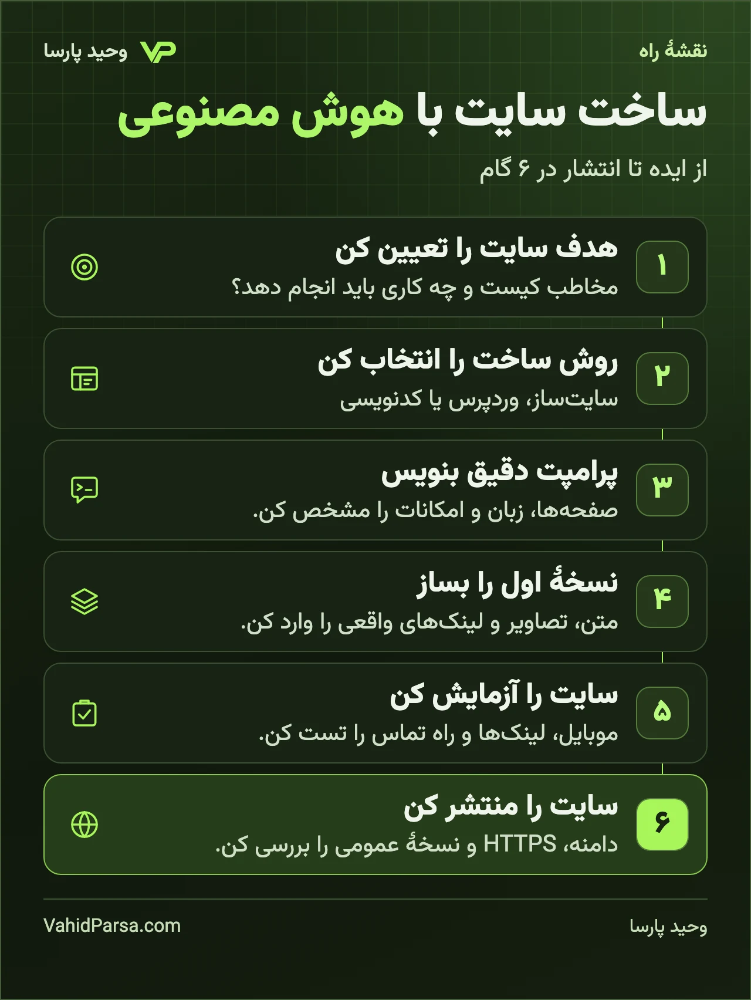

ساخت سایت با هوش مصنوعی از صفر تا انتشار؛ آموزش قدمبهقدم
چهار روش ساخت سایت را کنار هم ببین، برای یک پروژهٔ نمونه پرامپت بنویس و یاد بگیر پیش از انتشار چه چیزهایی را باید بررسی کنی.

برای ساخت سایت با هوش مصنوعی از کجا شروع کنیم؟
قبل از انتخاب ابزار، تصمیم بگیر بازدیدکننده بعد از ورود به سایت چه کاری انجام دهد. برای سایت یک مدرس، شاید هدف دیدن نمونهکار و درخواست همکاری باشد. برای یک فروشگاه، مسیر انتخاب محصول، پرداخت و پیگیری سفارش اهمیت دارد. همین تفاوت تعیین میکند به یک صفحهٔ ساده نیاز داری یا به سیستمی با مدیریت محتوا و داده.
برای یک سایت معرفی ساده، با سایتساز یا یک قالب استاتیک شروع کن. برای وبلاگی که مرتب بهروزرسانی میشود، وردپرس را بررسی کن. برای حساب کاربری، داشبورد یا فرایند اختصاصی، مسیر توسعه با دستیار کدنویسی را انتخاب کن و زمان بیشتری برای تست کنار بگذار. در ادامه برای هر مسیر توضیح دادهام چه چیزی میگیری و قبل از انتشار چه چیزی را باید بررسی کنی.
ویدیوی آموزش ساخت سایت از صفر
مقایسهٔ روشهای ساخت سایت با هوش مصنوعی
| روش | مناسب برای | پیش از انتخاب بررسی کن |
|---|---|---|
| سایتساز بدون کد | سایت معرفی، نمونهکار و صفحهٔ فرود | پشتیبانی از فارسی و راستچین، اتصال دامنه و امکان انتقال محتوا |
| وردپرس و دستیار هوش مصنوعی | وبلاگ، سایت محتوایی و پروژهای که از پیشخوان مدیریت میشود | پلن یا هاست، پشتیبانی قالب، افزونهها و شیوهٔ تهیهٔ بکاپ |
| تولید کد استاتیک | سایت شخصی، رزومه و صفحهٔ معرفی با فایلهای قابل انتقال | شیوهٔ ویرایش محتوا و سرویس جداگانهٔ فرم در صورت نیاز |
| توسعه با عامل کدنویسی | وباپ با حساب کاربری، داده یا منطق اختصاصی | محیط اجرا، دیتابیس، امنیت دسترسیها و هزینهٔ نگهداری |
۱. سایتساز بدون کد برای رسیدن سریع به نسخهٔ اول
در سایتسازی مثل سایتساز هوش مصنوعی Wix توضیح میدهی چه نوع سایتی میخواهی، سپس صفحات پیشنهادی را در ویرایشگر همان سرویس تنظیم میکنی. اسم خدمات، تصاویر و راه ارتباطی واقعی را جایگزین محتوای اولیه کن. یک صفحهٔ فارسی آزمایشی بساز و چیدمان دکمهها، منو و متنهای ترکیبی فارسی و انگلیسی را روی گوشی ببین.
پیش از خرید یا اتصال دامنه، شرایط خروجیگرفتن، هزینهٔ تمدید و دسترسی مخاطب به سایت را بررسی کن. اگر مالکیت کد یا انتقال سریع پروژه به هاست دیگر برایت مهم است، آن را از ابتدا معیار انتخاب قرار بده.
۲. وردپرس برای انتشار و ویرایش منظم محتوا
در این روش هوش مصنوعی میتواند ساختار صفحه، پیشنویس متن و طرح اولیه را پیشنهاد بدهد و مدیریت نوشتهها در وردپرس انجام شود. راهنمای رسمی WordPress.com برای ساخت سایت با WordPress Agent مسیر سرویس میزبانیشدهٔ خودش را توضیح میدهد. اگر وردپرس را روی هاست شخصی نصب میکنی، قالب یا ابزار ویرایش سازگار با همان نصب را انتخاب کن.
برای یک سایت محتوایی، پیش از ساختن ده صفحه، یک نوشته و یک صفحهٔ ثابت منتشر کن. دستهبندی، نشانی نوشته، نمایش تصویر شاخص و تجربهٔ ویرایش از پیشخوان را بررسی کن. اگر محصول هم میفروشی، مسیر سفارش آزمایشی از افزودن به سبد تا ثبت نتیجهٔ پرداخت را جداگانه تست کن.
۳. سایت استاتیک با HTML و CSS برای کنترل فایلها
برای یک رزومه یا سایت معرفی، از دستیار کدنویسی بخواه ابتدا یک نسخه با HTML معنایی، CSS واکنشگرا و جاوااسکریپت در حد نیاز بسازد. فایلها را در Git نگهدار تا هر تغییر را ببینی و در صورت لزوم به نسخهٔ قبل برگردی. این مسیر برای یک پروژهٔ کوچک آموزشی مناسب است، چون ساختار سایت و فایلهای لازم برای انتشار را میبینی.
یک سایت استاتیک میتواند پاسخ فرم را به سرویس بیرونی بفرستد، اما خود فایلهای HTML جایی برای ذخیرهٔ امن پیام یا حساب کاربری ندارند. برای صفحهٔ تماس ساده، لینک ایمیل یا پیامرسان انتخاب قابلاجراست. اگر فرم واقعی لازم داری، سرویس دریافت فرم یا بخش سرور را جداگانه تنظیم کن.
۴. عامل کدنویسی برای وباپ و امکانات اختصاصی
اگر کاربران باید وارد حسابشان شوند، داده ثبت کنند یا نتیجهٔ شخصیسازیشده ببینند، پروژه را مثل یک نرمافزار طراحی کن. یک عامل کدنویسی مثل Replit Agent میتواند در پیادهسازی نسخهٔ آزمایشی کمک کند. ابتدا فقط یک مسیر کامل بساز، مثلاً «ثبتنام، ورود، ثبت یک یادداشت و مشاهدهٔ همان یادداشت».
قبل از انتشار، با دو حساب مختلف بررسی کن هر کاربر فقط به دادههای خودش دسترسی دارد. کلیدها را در تنظیمات امن محیط اجرا نگهدار و حذف داده، بازیابی بکاپ و رفتار برنامه هنگام خطای سرور را آزمایش کن. برای انتخاب ابزار، مقایسهٔ پنج هوش مصنوعی برای کدنویسی را ببین.
آموزش قدمبهقدم با یک پروژهٔ نمونه
فرض کن میخواهی برای یک مدرس، سایتی بسازی که خدمات، دو نمونهکار و راه تماسش را نشان دهد. نسخهٔ اول فقط یک صفحه دارد. این اندازه برای تمرین مناسب است، چون میتوانی در یک پروژه طراحی، تست و انتشار را تجربه کنی.

گام اول: هدف و محتوای واقعی را آماده کن
در یک جمله بنویس «بازدیدکننده بعد از دیدن دو نمونهکار باید بتواند پیام بدهد». نام مدرس، توضیح کوتاه خدمت، دو نمونهکار واقعی و راه تماس را آماده کن. اگر عکس یا نمونهای هنوز در دسترس نیست، در پیشنمایش آن را با برچسب مشخص کن تا سهواً همراه سایت منتشر نشود.
گام دوم: روش انتشار را پیش از انتخاب ابزار مشخص کن
برای این صفحه، خروجی استاتیک انتخاب خوبی است، چون نیازی به ذخیره اطلاعات در سرور ندارد. اگر صاحب سایت میخواهد هر هفته آموزش تازه منتشر کند و ترجیح میدهد فایلها را ویرایش نکند، وردپرس یا سایتسازی با پنل مدیریت را بررسی کن. این تصمیم باید قبل از طراحی نسخهٔ نهایی روشن باشد.
گام سوم: پرامپت قابل بررسی بنویس
بهجای «یک سایت حرفهای بساز»، خروجی مورد انتظار را مشخص کن. متن زیر را با اطلاعات پروژهٔ خودت کامل کن.
برای یک مدرس هوش مصنوعی، صفحهای فارسی و راستچین بساز. بخشها شامل معرفی، خدمات، دو نمونهکار و تماس باشد. هدف اصلی کلیک روی دکمهٔ «درخواست همکاری» است. محتوا و لینکهایی را که من میدهم وارد کن. برای موارد ناقص، جای خالی مشخص بگذار. خروجی را با HTML و CSS واکنشگرا و فایلهای محلی تحویل بده. صفحه در عرض ۳۶۰ پیکسل اسکرول افقی نداشته باشد و دکمهها با صفحهکلید قابل استفاده باشند. در پایان، فهرست فایلها و مراحل اجرای محلی و انتشار را بنویس.
اگر ابزار پیشنهادی با نیازت سازگار نیست، ابتدا از دستیار بخواه دلیل انتخابش را توضیح دهد. مرز درخواست را روشن نگهدار، مثلاً «چیدمان موبایل را اصلاح کن و شمارهٔ تماس و متن صفحه را حفظ کن».
گام چهارم: نمونهٔ اولیه را بساز و محتوا را بازبینی کن
اول ساختار صفحه و عملکرد دکمهٔ اصلی را کامل کن. بعد رنگ، فونت و عکسها را تنظیم کن. متن را یک بار از دید مخاطب بخوان و ببین از همان ابتدای صفحه میفهمد چه خدمتی ارائه میدهی، نمونه را کجا میبیند و چه راهی برای تماس دارد. هر ادعای تولیدشده دربارهٔ قیمت، تجربه یا مشتری را با اطلاعات واقعی پروژه تطبیق بده.
گام پنجم: قبل از انتشار یک دور از مسیر کاربر عبور کن
- صفحه را روی گوشی و دسکتاپ باز کن. اندازهٔ متن، نمایش فارسی و منو را بررسی کن.
- با کلید Tab بین اجزای تعاملی حرکت کن و مطمئن شو نشانگر فوکوس دیده میشود.
- همهٔ لینکها و دکمههای اصلی را بزن. اگر فرم داری، دریافت واقعی پیام و حالت خطا را تست کن.
- تصاویر را با اندازه و حجم مناسب بارگذاری کن و برای تصاویر اطلاعاتی متن جایگزین بنویس.
- عنوان و توضیحات هر صفحه را متناسب با همان صفحه تنظیم کن و نشانی نهایی آن را در نقشهٔ سایت قرار بده.
گام ششم: منتشر کن و نسخهٔ عمومی را دوباره بررسی کن
در سایتساز یا وردپرس، انتشار و دامنه را از پنل سرویس تنظیم کن. برای فایلهای استاتیک، GitHub Pages یکی از راههای میزبانی است. برنامهای که کد سمت سرور اجرا میکند به هاستی سازگار با محیط اجرای خودش نیاز دارد. بعد از اتصال دامنه، سایت را روی نشانی عمومی و با HTTPS باز کن. مسیر فایلها، نسخهٔ موبایل و اقدام اصلی را یک بار دیگر بررسی کن.
چکلیست سئو و نگهداری بعد از انتشار
ساختار قابل پیمایش. هر صفحه یک عنوان اصلی روشن داشته باشد. از صفحهٔ اصلی یا صفحات مرتبط به آن لینک بده و برای لینک، متنی بنویس که مقصد را توصیف کند. بهجای تکرار عبارت «ساخت سایت با هوش مصنوعی»، سوال واقعی خواننده را در هر بخش پاسخ بده.
نشانیها و امکان نمایهسازی. نقشهٔ سایت را در Google Search Console ثبت کن و با ابزار بازرسی URL وضعیت صفحههای مهم را بررسی کن. اگر نسخهٔ آزمایشی noindex داشته، تنظیم نسخهٔ عمومی را جداگانه بررسی کن. راهنمای شروع سئوی گوگل جزئیات مربوط به عنوان، لینکها و ساختار را توضیح میدهد.
آمادگی برای بهروزرسانی. قبل از تغییر مهم بکاپ یا نسخهٔ مشخصی از پروژه نگهدار. راه تماس و اطلاعات خدمات را بهروز کن و پس از بهروزرسانی، نسخهٔ عمومی را باز کن. برای سنجش نتیجه، اقدام اصلی سایت را دنبال کن، مثل ارسال درخواست همکاری، و بازخورد مخاطبان را در اصلاح نسخهٔ بعدی دخالت بده.
هزینهٔ ساخت سایت با هوش مصنوعی از کجا میآید؟
هزینه را به چند بخش تقسیم کن: دامنه و میزبانی، ابزار یا اشتراک، تولید محتوا و نگهداری. برای یک صفحهٔ استاتیک ساده ممکن است هزینهٔ اصلی فقط دامنه باشد، اما سایت دارای فرم، فروش یا ثبتنام میتواند هزینهٔ سرویس جداگانه، ارسال ایمیل، دیتابیس و پشتیبانی داشته باشد.
پیش از انتخاب پلن، یک نمونه با دو یا سه نیاز اصلیات بساز. سپس هزینهٔ سال اول و تمدید را از صفحهٔ رسمی سرویس بررسی کن. اگر ویرایش یک متن ساده همیشه به کمک توسعهدهنده یا خرید اعتبار اضافه نیاز دارد، آن زمان و هزینه را هم در تصمیم لحاظ کن.
پرسشهای رایج
آیا میتوان بدون برنامهنویسی سایت ساخت؟
بله، برای سایت معرفی یا صفحهٔ فرود، سایتسازها و ویرایشگرهای بصری معمولاً کافیاند. همچنان باید متن، ظاهر موبایل، دامنه و راه تماس را تنظیم و آزمایش کنی.
آیا سایت ساختهشده با هوش مصنوعی در گوگل نمایش داده میشود؟
استفاده از هوش مصنوعی بهخودیخود تعیینکنندهٔ نتیجه نیست. دسترسی خزنده، محتوای مفید، لینکهای داخلی و کیفیت صفحات مهماند. دربارهٔ تولید محتوا، راهنمای گوگل برای استفاده از هوش مصنوعی مولد را بخوان.
آیا میتوان با همین روش فروشگاه ساخت؟
بله، از هوش مصنوعی برای طراحی صفحهٔ محصول، ساخت پیشنویس محتوا و آمادهسازی نمونه کمک بگیر. برای فروش واقعی، موجودی، پرداخت، ارسال و وضعیت سفارش را روی یک سیستم فروشگاهی مناسب تنظیم کن و پیش از معرفی سایت، یک خرید آزمایشی کامل انجام بده.
ساخت نسخهٔ اولیه چقدر طول میکشد؟
زمان به آماده بودن محتوا و پیچیدگی سایت بستگی دارد. نسخهٔ اولیهٔ یک صفحهٔ معرفی معمولاً از پروژهٔ چندصفحهای یا فروشگاه سریعتر آماده میشود. برای ویرایش محتوا، تست واقعی و اتصال دامنه زمان جدا در نظر بگیر.
برای اجرای این مسیر با فایل آماده و سه پرامپت مرحلهای، آموزش پروژهمحور وایب کدینگ را دنبال کن.
اول یک صفحهٔ کامل بساز
یک هدف انتخاب کن و همان را تا نسخهٔ عمومی پیش ببر. اگر میخواهی همراه با تصویر مراحل را دنبال کنی، آموزش کامل ساخت سایت در یوتیوب را ببین. برای تمرینهای بیشتر هم به آموزشهای رایگان وحید پارسا سر بزن.